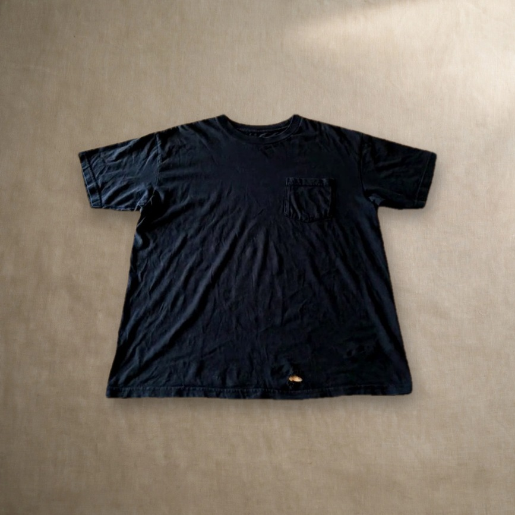
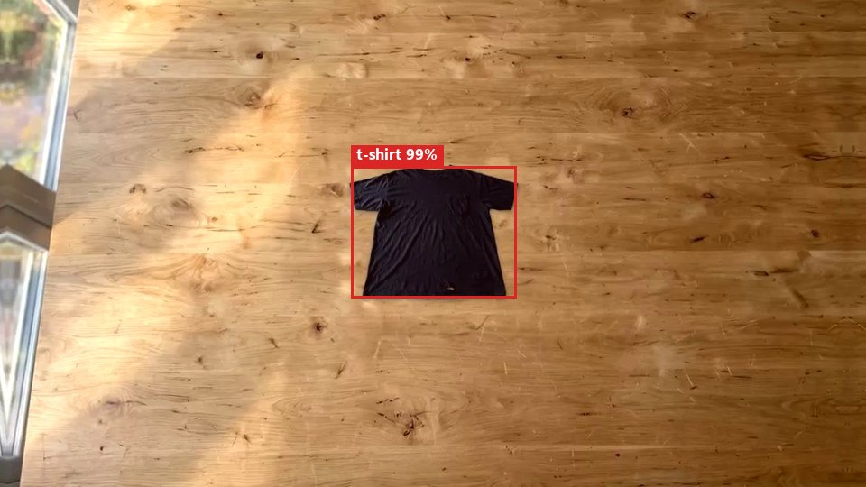
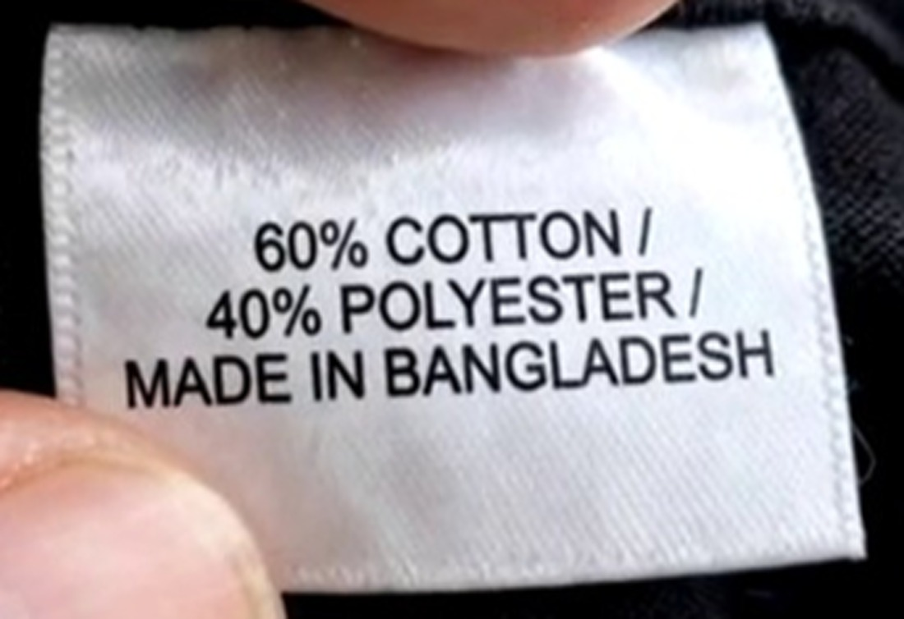
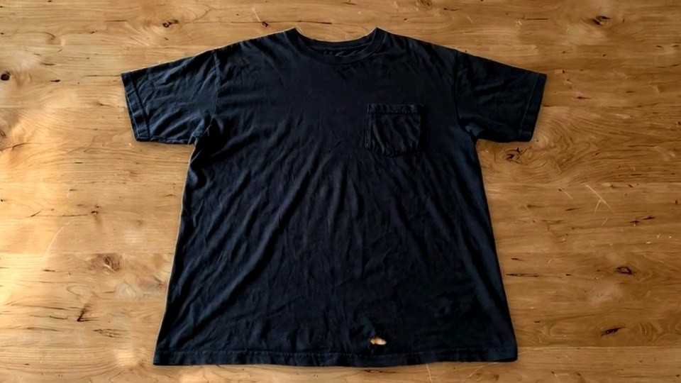
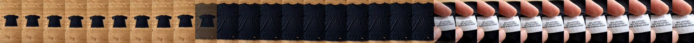

Muse Voice hears each sentence. Muse Spark turns it into facts a camera could check.
SAM 3.1 hunts for the evidence on every frame and coaches the shot. Plain Python rules decide what's true.
Only what was established goes in. Damage nobody mentioned gets flagged.
Any question becomes a SAM 3.1 search through the footage, answered with the moment that shows it.

The product is the camera's real pixels, 214,972 of them checked identical. Only the background was generated.
The take, every piece of evidence tracked
3 things the seller said weren't true.
set of 2→ 1100% cotton→ 60% Cotton / 40% Polyestermade in Portugal→ Made in Bangladesh
Black t-shirt with chest pocket
Black t-shirt with chest pocket made from 60% Cotton / 40% Polyester. Made in Bangladesh. Includes 1 shirt with small hole near bottom hem.
The camera also noticed



Nothing is published automatically. A match is what the camera saw, not a certification, and printed labels can be wrong too.
What the buyer gets
Don't trust the seller. Ask the video.

Every second of the seller's 18-second video, searchable. If it was never filmed, the answer says so.